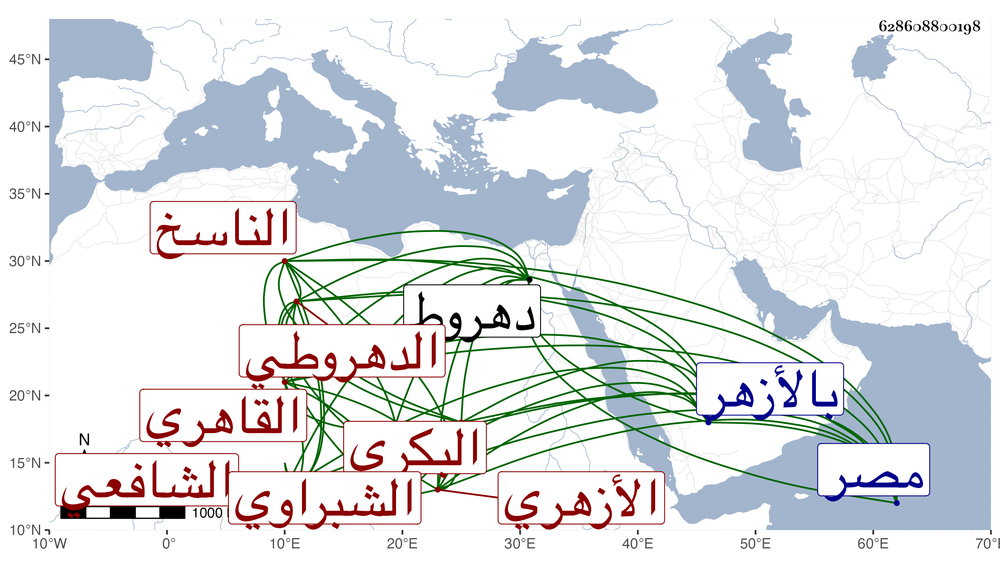

0902Sakhawi.DawLamic.ITO20230111-ara1.EIS1600.628608800198
Biography ID: 628608800198
324
محمد بن محمد بن عبد الله الصدر بن الزين البكري الدهروطي ثم القاهري الأزهري الشبراوي الشافعي الناسخ قريب الجلال البكري فالجلال ابن خال والده ويعرف بلقبه . ولد بدهروط في سنة ثلاث وخمسين ونشأ بها وقرأ القرآن ثم تحول بعد بلوغه إلى مصر وحفظ بها المنهاج وعرضه على المناوي وغيره وجاور بالأزهر وحضر دروس العبادي والفخر المقسي فمن يليهما كمحمد الضرير وعبد الحق وكتب بخطه أشياء منها غير نسخة من شرحي للألفية وأقام بشبري النخلة على طريقة حسنة يشهد ويخطب بها أحيانا ويتردد منها للاشتغال وغيره ماشيا أو راكبا وحج وجاور وحضر دروس الفخر أخي القاضي ثم جاء في البحر في سنة ثمان وتسعين فحج وجاور السنة التي بعدها وقرأ على مجلي في الفقه وعلى السيد عبد الله في العربية والأصول وسمع على أشياء وكتب بخطه من تصانيفي ونعم الرجل .
